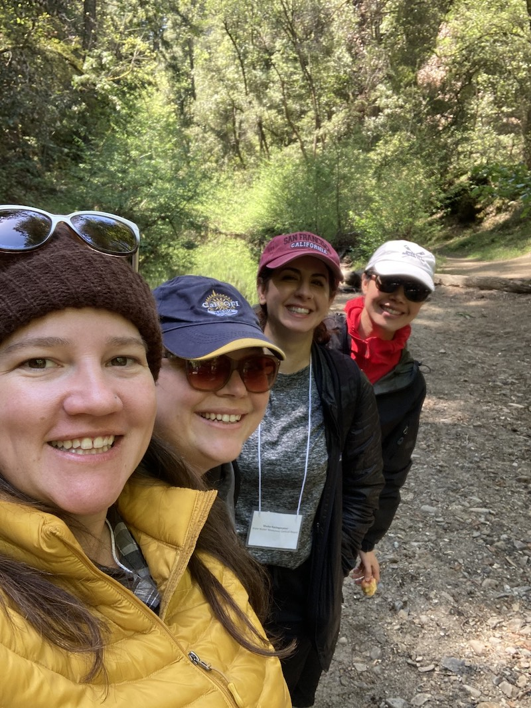

![Example timeline for an Openscapes Cohort. Orange timeline bar at bottom of image extends from Aug 2022 to Jan 2023. Headings at top of image define shapes that label elements on the timeline."Pre-program engagement" marked by orange horizontal line spans 1.5 weeks and includes Instructor:Team 1:1 meetings; "Openscapes Champions Program" marked by blue diamonds (Cohort Call, 2hrs weekly), magenta horizontal lines (Seaside Chats, 1hr weekly between Cohort Calls), green squares (Co-working Sessions, optional, 1hr weekly on Fridays); "Post-program follow-up" marked by magenta triangles (2-month Cohort Seaside Chat of 1hr). Vertical lines intersect with timeline at blue diamonds to indicate Cohort Call 1 on 8/17, Call 2 on 8/31, Call 3 on 9/14, Call 4 on 9/28, Call 5 on 10/19. Vertical lines intersect with timeline at green square to indicate co-working on 9/9, 9/23, 10/7, 10/14. Vertical line intersects with timeline at magenta triangle to indicate 2-month Cohort Seaside Chat on 12/14.](Openscapes_SWAMPCohort_Timeline_20220526.png)
Note: Openscapes began to work with and onboard mentors over the summer of 2021 while also beginning writing the Openscapes Approach Guide to help document our process. This post focuses on what the California Water Boards mentors learned in 2022 as they led their own Cohort in the agency. This was the first Cohort to be “independently led” by mentors within their own agency, we hope the first of many! Thank you Corey and Anna for your continued and inspiring leadership in open and kinder science (and beyond).
This blog post is authored by Corey Clatterbuck and Anna Holder from the California Water Boards Office of Information Management and Analysis (OIMA). Here, we describe why we led a Champions Program Cohort at the California Water Boards and how we did it, including details about our process, outcomes, what we learned, and what’s coming next. See openscapes.org/champions for more background on the Champions program.
Addition February 2023:
- SWRCB-Openscapes Book: Education and mentorship in open science at the California State Water Resources Control Board
Intro to the OIMA | Openscapes Partnership
We joined Openscapes last year as mentors for multiple NOAA Champions Cohorts held in Fall 2021 – you can learn more about our experience as Cohort mentors in this blog post. This experience was so fulfilling that Corey transitioned into a staff position at the Office of Information Management and Analysis (“OIMA”) at the California State Water Resources Control Board (SWRCB; “Water Boards”) in early 2022. Operationalizing open science practices throughout the Water Boards is at the core of OIMA’s mission to enhance the value, quality, understanding, and accessibility of Water Boards data and information through strategic activities, coordination, and changing the culture of data management at the agency, which includes transparency of the Water Boards information management structure. The Openscapes Champions Program has introduced us to so many possibilities to help us meet our mission, and we are excited to continue to diffuse the Openscapes mindset and related concepts in our daily work.
One of our priority items for this year was to plan and execute a Champions Cohort at the Water Boards. While cohorts are typically led by the Openscapes team, this was the first to be led by Openscapes mentors and the first Champions Cohort at a US state government agency. We hope our story can empower others to connect with the Openscapes community and start building more open, kind, and inclusive working groups and workflows at their institutions!
Openscapes open access model enabled adaptation for our workplace
We started with the Champions Program section in the Approach Guide, which led us through each step of cohort planning and implementation. We created a behind-the-scenes timeline with internal due dates for items including those in the Approach Guide, ~10 weeks prior to cohort start. For us, this included items like management briefings, mentor onboarding, cohort team engagement, guest speaker invitations, and creating and editing call content based on the participating teams. We also created a program timeline to visualize the calendar of cohort calls, seaside chats, co-working sessions, and check-ins with the cohort.
Program timeline for the California Water Boards Cohort including Pre-program engagement, Openscapes Champions Program, and Post-program follow-up
Openscapes practices what it preaches regarding reiteration of workflows via the Kyber R package, built by Sean Kross (an educator, software developer, and long-time Openscapes collaborator). Kyber aids set up of Champions Cohorts, including the cohort GitHub repository and cohort call agendas, and we found it extremely practical and easy to use. For example, instead of copying and pasting old cohort call agendas from Google Drive and erasing old notes while retaining the agenda framework, Kyber includes a function to build each agenda which is eventually pasted into a Google Doc. If the Openscapes team decides to make programmatic changes to the core Openscapes program, these changes are easily edited within Kyber for use in upcoming cohorts. The Kyber README is clear on the repository’s functionality and steps to launch, but ultimately users will need to know the basics of R and GitHub to use it – a potential challenge for empowering Openscapes mentors who have less experience with these tools. Additionally, Kyber is built to function with Google Docs and Sheets, so its use highly encourages concurrent use of Google products.
Lastly, we piloted a couple of changes to Champions Program planning and lessons to customize the process to better serve our current organizational framework and needs.
Water Boards management selected teams for this pilot cohort.
While Openscapes uses Google products for cohort sharing, the Water Boards purchases Microsoft products. We continued using Google Drive and all associated programs for document storage and sharing so that we could reap the benefits of using Kyber, but we used Microsoft Teams to host all virtual meetings and group communication between calls. While setting up breakout groups was a bit more clunky than Zoom or Google Meet, cohort members were accustomed to using Microsoft Teams in their everyday workflow. Cohort teams were free to create their Pathway in any program of their choice, and we helped migrate them to Google Drive.
We changed the order and length of Openscapes lessons to center culture and connection to the Pathway, and to give us more time to dive into and discuss these topics. Specifically, we made all cohort calls 2 hours instead of 1.5 hours, and we moved the GitHub Clinic to Call 3 to help cultivate the Openscapes mindset during Calls 1 and 2 – namely, discuss space and place for discussion and community-building, as well as a growth mindset for approaching new ideas like GitHub! We also emphasized GitHub as a tool that supports workflows, version control, and documentation over a tool for coding, as many of our cohort members do not code regularly.
After introducing GitHub as a tool to support documentation, we developed Call 4 to build on ways to document workflow processes & documentation through the Pathway.
Documentation through the Pathway
One of the best parts of participating in an Openscapes Champions Cohort is being able to dedicate time to thinking about what you do, how you do it, and how you might be able to do it better. While thinking about the concepts and workflows is great - the real power comes from taking the time to write things down. When we served as mentors it became abundantly clear that carving out space and time for documentation was critical - and when teams did allocate the time and energy to those efforts, they were better able to see opportunities for collective improvement and felt more empowered to make changes together. This not only helped teams make their workflows more open and transparent, but it also served as a way to build team comradery, collaboration, and trust.
When we shared concepts around documentation with the SWRCB Cohort during the first and second cohort calls, members shared similar interests in the process:
“Being able to find the data I need and not having to ‘know that person’”
“I have on multiple occasions had to work with data that was generated by a different person or group and that I had no prior knowledge of. When the data is not well organized it can be very difficult to interpret what you are looking at, and without good note taking in the original document I’ve also run into the issue where the person providing me with the data also was unsure of what some of it meant. This takes a lot of time away from actually plotting or analyzing that data, and proper note taking / organization can prevent all or most of it.”
“Make it easier for others to re-use my work, and easier for collaborators to contribute to it”
We focused on documentation in Call 4 so that we could include GitHub as a tool for documentation and discuss some great examples of documentation using GitHub, such as the much exalted Fay Lab Manual for workgroup identity & culture. We also highlighted Dr. Nick Hagerty’s repository on California surface water distribution as an example of project documentation, including a clear README, data dictionaries, and policies for contribution and re-use. We also discussed finding the right documenting “tool” for the job (and the team!). For internal work processes, perhaps documenting on SharePoint is sufficient and can already be easily included into the organization’s existing file folder organization system. GitHub can enable collaboration for projects that require or benefit from input from collaborators outside the Water Boards. We also integrated Champions lesson material from topics we weren’t able to teach this cohort, e.g. Jenny Bryan’s Tips for Naming Things which is typically in Coding Strategies for Future Us.
Like most organizations, the Water Boards has documents, data, and projects that exist in different places with different sharing capabilities, paired with variable version control and documentation of where these items live. The Pathway is a tool that helped the SWAMP team (Surface Water Ambient Monitoring Program) document the commonalities of where items live, whether they should be re-organized, and collating this information as a part of a SWAMP manual for team members. The PFAS team (Per- and Polyfluoroalkyl Substances) noted similar struggles, but instead plan to create a file organizational structure schema in a team-based data dictionary. Their data dictionary will also include file name standards and metadata crosswalks between different, commonly-used data sources. The Performance Measures team used their Pathway to document how each data system or program they use applies to the template Pathway topics – e.g., where and in what formats are data from GeoTracker stored, where can you find the GeoTracker metadata, etc. The team then summarized the issues from each data system in order to determine next steps for simplifying their workflows. Some folks struggled through the process because documentation is difficult and, despite team members recognizing its importance, many don’t have enough (or any!) time to commit to it. Despite all of that, each team developed an awesome pathway and are well on their way past the initial trailhead.
Culture change requires talk, action, and time
The concept and practice of “culture” is central to this work - but can also sometimes feel a bit abstract and distant (insert generic hand wave-y gestures here). Culture, according to Daniel Coyle, New York Times bestselling author of The Culture Playbook, “is not about words or what we talk about. Culture is about behaviors and actions.” And a collective change in work behaviors and actions such as incorporating open science practices takes time to practice, implement, and support.
Eli Holmes, a fisheries biologist at NOAA Fisheries and amazing Openscapes Mentor, introduced the idea of early adopters and their role in cultural transformations at the cross-government 2022 Earth Science Information Partners (ESIP) meeting (blog post). Eli describes early adopters of open science as people who understand & embrace new ideas and find ways to apply them in the workplace. While the enthusiasm of early adopters drives the diffusion of innovation within an organization, it can take many years for these ideas to become commonplace. As a result, it can be discouraging for early adopters to continue pushing for and implementing innovative ideas.
Water Boards management curated the teams for this pilot cohort in part by actively identifying and pulling in early adopters of open science workflows, collaboration, and vision. However, that isn’t to say that culture change within our early adopter teams is happening quickly! As one might expect - normalizing language, process, and changing behaviors and actions to support more open workflows and mindsets can be a challenging shift for teams. Despite these challenges, our post-cohort survey suggested that ultimately, Openscapes did help individuals adopt an open mindset towards their work, their teams, and themselves - and that teams are now beginning the process of changing their processes, behaviors, and actions to be more open, inclusive, and kind:
“It has been a great opportunity for me to slow down and take the time to evaluate / check-in on my work and team workflow / processes. Many of the things we discussed are totally in line with my personal philosophies / approaches but I haven’t really put time into thinking about how to establish those things through documentation. I tend to be an individual worker bee and appreciate the co-working concepts and getting more comfortable in that shared space to do work!”
“How important it is to…give people the space to work and try new things. I think I’ve better internalized that it’s okay to share imperfect work.”
“Now that more staff have been exposed to the Openscapes principles, I think I will be more comfortable suggesting the use of tools like Git / GitHub and code-based workflows. In general, I will also be more comfortable suggesting that we use better project management practices and think about things like documentation / reproducibility as fundamental parts of our work, and not just make those an afterthought.”
The progressive changes that cohort members identified fit right in with where our organization is on the theory of diffusion of innovation (i.e., we’re just beginning!). Additionally, Cohort members largely responded that other Water Boards colleagues would find the Openscapes Champions Program valuable – so we plan to expand and start connecting to other early adopters to further diffuse open science practices and mindsets in our organization!
How we’ll revise & relaunch in 2023!
Internal outreach & open call for teams: Over 3,000 people work at the Water Boards, so there are surely more early adopters out there that we have yet to identify. As a result, we are planning presentations and open chat sessions with internal roundtables, work groups, and management about the vision, framework, and outcomes of Openscapes. After expanding our outreach efforts, we expect to use an open call for teams to assemble the next Openscapes cohort at the Water Boards. A pre-emptive thank you to NOAA’s Openscapes Mentors for providing examples of communicating the benefits of Openscapes to internal groups - in true Openscapes style, we will definitely be reusing and remixing their awesome material during this process at the Water Boards!
Rollout framework using internal tools: While Google Drive is a great platform for file organization, sharing, and real-time development, it is difficult to access & edit private drives without linking to a Google account first. Our alternative is Microsoft SharePoint, which may have a clunkier interface, but resolves access issues that members had to contribute to the cohort.
Develop an implementation strategy: Just like at other large and small institutions, Water Boards management use strategic plans to document priorities and make decisions about how their staff will spend their time to accomplish programmatic and agency missions. We will be drafting an Openscapes Implementation Strategy to document our OIMA’s proposed vision, goals, objectives, and expected outcomes of continuing to lead Openscapes Champions cohorts at the Water Boards, in addition to the implementation steps, target audience, and expected timeline. We are drafting the strategy in November and December 2022 and will begin distributing the strategy through the internal outreach process in 2023.

SWAMP team Environmental Scientists that went through the SWRCB 2022 Cohort